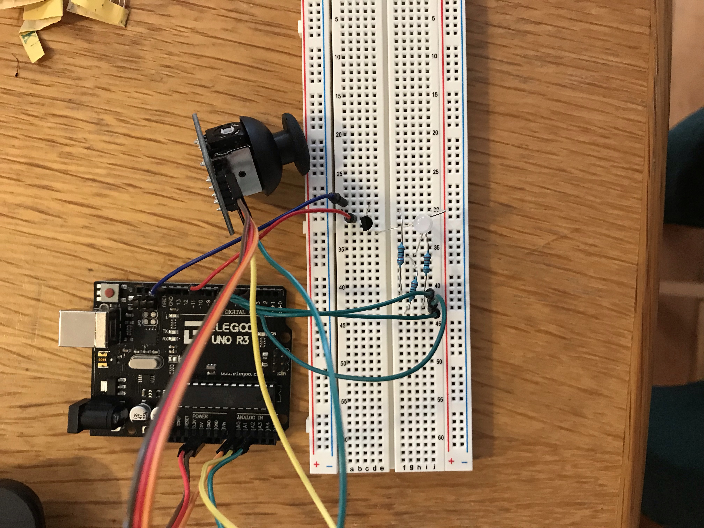
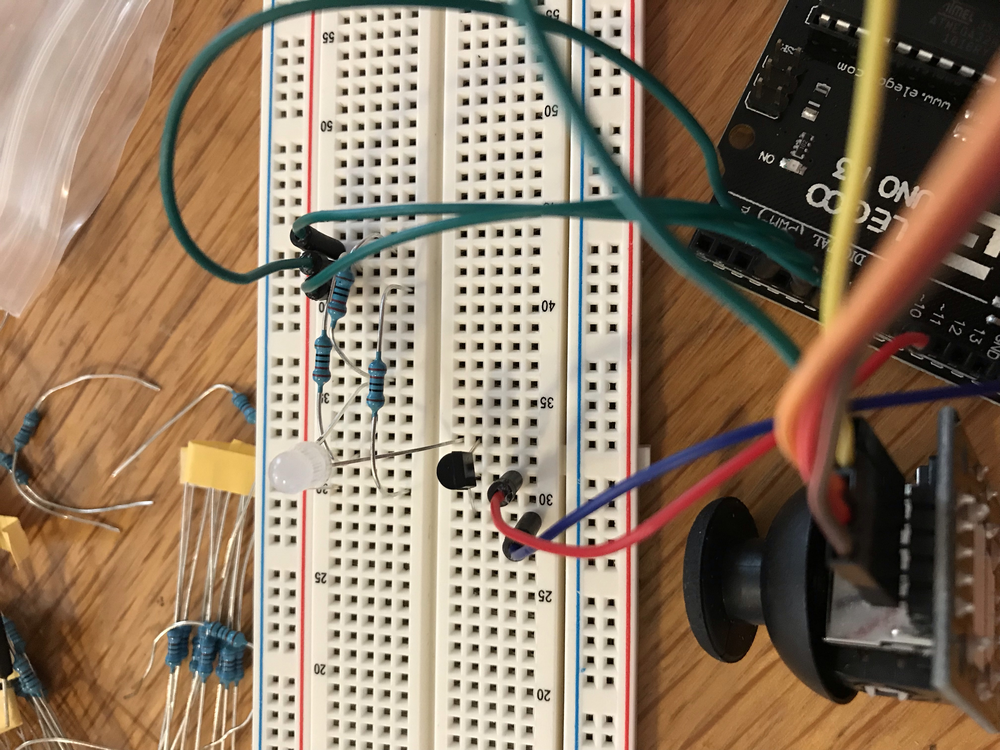
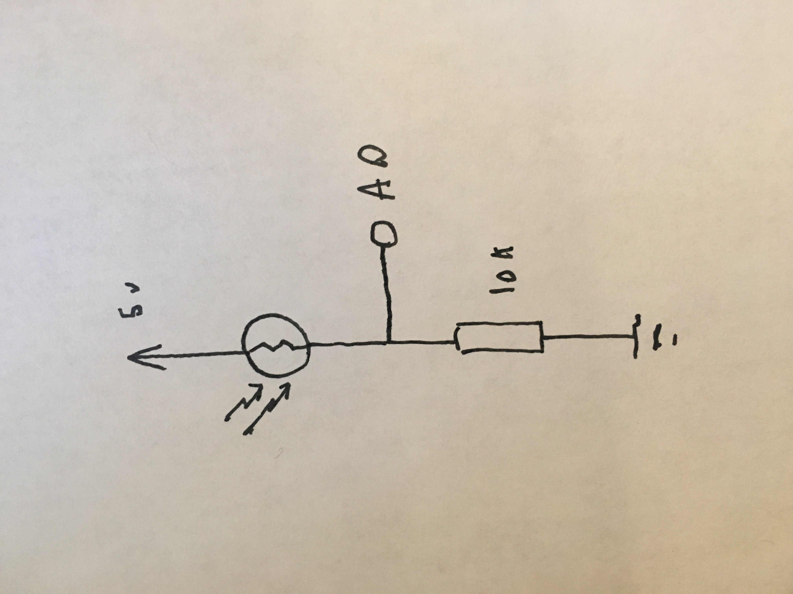

Espen Scheuers's Assignment 7!
Here is a video of assignment 7.

Here are some photos of assignment 7.



Here is the arduino code for Assignment 7:
// Sets global variables for later use
int color1 = 255;
int color2 = 255;
int color3 = 255;
int onPin = 9;
int redPin = 3;
int greenPin = 5;
int bluePin = 6;
int xPosition = 500;
int yPosition = 500;
int button = 0;
void setup() {
Serial.begin(9600); // initialize serial communications
Serial.setTimeout(10); // set the timeout for parseInt
// sets output pins
pinMode(onPin, OUTPUT);
pinMode(redPin, OUTPUT);
pinMode(greenPin, OUTPUT);
pinMode(bluePin, OUTPUT);
}
void loop() {
xPosition = analogRead(A0); // reads x
yPosition = analogRead(A1); // reads y
button = analogRead(A2); // reads button
// adjusts x and y positions
xPosition = xPosition - 530;
yPosition = yPosition - 530;
Serial.print("["); // starts formatting json array
// finds the direction the joystick is pointing and prints 0 1 2 3 or 4 depending
if(xPosition > 50) {
Serial.print(1);
} else if(xPosition < -50) {
Serial.print(2);
}
if(yPosition > 50) {
Serial.print(3);
} else if(yPosition < -50) {
Serial.print(4);
} else {
Serial.print(0);
}
// finishes formatting json
Serial.print(",");
Serial.print(button);
Serial.println("]");
if (Serial.available() > 0) { // if there's serial data
color1 = Serial.parseInt(); //sets colors to serial data
color2 = Serial.parseInt();
color3 = Serial.parseInt();
}
setColor(color1, color2, color3); // use it to set the LED color
analogWrite(onPin, 255); // controls brightness with transistor because I had to use one
delay(200);
}
// method that sets color of RGB led
void setColor(int redValue, int greenValue, int blueValue) {
analogWrite(redPin, redValue);
analogWrite(greenPin, greenValue);
analogWrite(bluePin, blueValue);
}
Here is the p5 code for Assignment 7:
var serial; // variable to hold an instance of the serialport library
var portName = 'COM3' //rename to the name of your port
var dataarray; //some data coming in over serial!
var xPos = 0;
// colors for later
var color1 = 255;
var color2 = 255;
var color3 = 255;
var yPos = 0;
function setup() {
serial = new p5.SerialPort(); // make a new instance of the serialport library
serial.on('list', printList); // set a callback function for the serialport list event
serial.on('connected', serverConnected); // callback for connecting to the server
serial.on('open', portOpen); // callback for the port opening
serial.on('data', serialEvent); // callback for when new data arrives
serial.on('error', serialError); // callback for errors
serial.on('close', portClose); // callback for the port closing
serial.list(); // list the serial ports
serial.open(portName); // open a serial port
createCanvas(1200, 500);
background(0x08, 0x16, 0x40);
}
// get the list of ports:
function printList(portList) {
// portList is an array of serial port names
for (var i = 0; i < portList.length; i++) {
// Display the list the console:
print(i + " " + portList[i]);
}
}
function serverConnected() {
print('connected to server.');
}
function portOpen() {
print('the serial port opened.')
}
function serialError(err) {
print('Something went wrong with the serial port. ' + err);
}
function portClose() {
print('The serial port closed.');
}
function keyPressed() {
//console.log("writing key");
serial.write(color1 + "," + color2 + "," + color3 ); // writes color to arduino
}
function serialEvent() {
if (serial.available()) {
var datastring = serial.readLine(); // readin some serial
var newarray;
try {
newarray = JSON.parse(datastring); // can we parse the serial
} catch(err) {
//console.log(err);
}
if (typeof(newarray) == 'object') {
dataarray = newarray;
}
console.log("got back " + dataarray + dataarray[0]);
}
draw();
}
function graphData(dataarray) {
newData = dataarray[0];
// adjust x and y position depending on the joystick
if(newData == 10) {
xPos += 10;
} else if(newData == 20) {
xPos -= 10;
} else if(newData == 3) {
yPos += 10;
} else if(newData == 4) {
yPos -= 10;
}
// makes sure the rect is inside the background
xPos = max(xPos, 0);
yPos = max(yPos, 0);
xPos = min(xPos, 1190);
yPos = min(yPos, 490)
rect(xPos, yPos, 10, 10); // draws rect
// if you press the joystick it randomizes the background color
if(dataarray[1] == 0) {
color1 = random(255);
color2 = random(255);
color3 = random(255);
newColor = color(color1,color2,color3);
background(newColor);
}
}
function draw() {
graphData(dataarray);
//background(0);
//fill(255);
//if (datain == 0) {
// text("button pressed: YES", 30,30);
//} else {
// text("button pressed: NO", 30,30);
//}
}